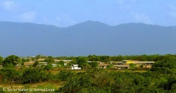

<!DOCTYPE html>
<html lang="en">
	<meta charset="UTF-8">
	<title>ICC New Chapter Application Form</title>
	<meta name="viewport" content="width=device-width, initial-scale=1">
	<link rel="stylesheet" href="https://fonts.googleapis.com/css?family=Boogaloo|Open+Sans:300,400|Oswald:700">
	<!-- <link rel="stylesheet" href="../css/main2.css">
	<link rel="stylesheet" href="../css/main1.css">
	<link rel="stylesheet" href="../css/main.css">
	<link rel="stylesheet" href="../css/style1.css"> -->
	<style>
		body{
			background-image: linear-gradient( red, red ,yellow , white ,green, green );
		}
		
	</style>
</html>
<body>
<div class="container">
	<h1>Iwokrama International Center</h1>
	<p>
		ICC is an international not-for-profit organization. It is governed by an International Board of Trustees. It is managed by staff at Georgetown and the Iwokrama River Lodge and Research Center at Kurupukarie. ICC's patron is HRH The Prince of Wales.<br>
		It was established in 1996 under a mandate of the Guyana Government and the Commonwealth Secretariat to manage the Iwokrama forest, a pristine and unique reserve of 371,000 hectares of rainforest. Its objective is for a lasting ecological economic and social benefits to the people of Guyana and the world at in general.<br>
		If you’re interested in starting a ICC chapter in your local community, please
		<a href="icc-app-form.html">contact&nbsp;us</a></p>
		
		<h2>Our Mission</h2>
		
			<figure>
				
				<figcaption>The Kanuku Mountain - Lethem</figcaption>
			</figure>
			
		<p>
			The Iwokrama Conservation Project was founded to promote the conservation and the sustainable and equitable use of the tropical rainforests.<br>
			The Iwokrama rainforest is located in the geographical heart of Guyana: it comprises 371,000 hectares of forest, or 1,6% of Guyana's landmass and 2% of Guyana forests.<br>
			Fundamental to the work of the Iwokrama Center is the geographical zoning the Iwokrama Forest into two spatially equal zones: a Sustainable Use Area (SUA) and a Wilderness Preserve (WP). The SUA is available for multiple resource use to yield benefits to present generations while maintaining the potential to meet the needs of future generations. The SUA is managed by the Center	 and the local communities and in particular Fair View Village. The WP serves as a reference area for studying the impacts of human activity through comparison with uses in the SUA, and to maintain a pool of genetic resources and culturally important sites in an intact state.
			</p>
	
</div>
<footer>
	<p>Made in NY <br>Copyright © ICC</p>
</footer>


</body>

</html>